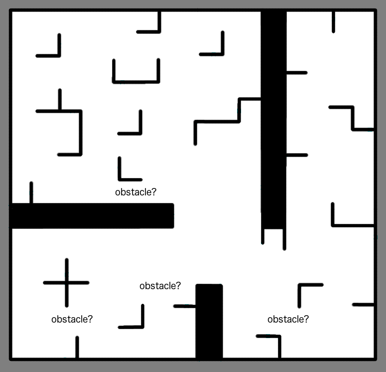

Obstacle Avoidance
Because real-life environments are variable and may not correspond accurately to our provided map, we chose to explore a naive obstacle avoidance routine to ensure that our robot does not get stuck when navigating to our target pose.
Where are the unmapped obstacles?

Our robot has the ability to change driving routines between pure PID control and a turn-then-actuate control scheme. Our obstacle detection routine was designed for use within the turn-then-actuate routine. After our robot turns to face our next desired pose, we run a LIDAR-based obstacle detection routine to determine if an unmapped obstacle obstructs the path immediately forward.
In the event that an obstacle is detected with LIDAR, a "block" of a size equivalent to our robot's radius is drawn in the map, centered at the estimated location of the obstacle. The file path of this new map is then passed to our navigation node, which re-computes the route between the current pose and the goal pose, given the new map. By setting the obstacle to the size of the robot, we can ensure that our path planner does not plan a path though the obstructed route. If no obstacle is detected, we simply drive directly forward to the goal pose, and continue with our drive routine.
Because this obstacle detection and avoidance routine is run between the turn and drive stages of this drive controller, we were able to implement a very simple obstacle-detector that detected obstacles immediately ahead. Further implementations of this robot may include the use of a full SLAM library, such that obstacles are more accurately drawn on our map and persist between robot uses.
Design Tradeoffs
As our robot is assumed to be localized and have a pre-existing map of its environment, we chose to build our own obstacle-avoidance node in-house. Rather than fully map an obstacle and draw it appropriately onto a map, we opted for a more naiive approach, in which we strictly detect for obstacles in front of us. By assuming that our path-planner does not return invalid paths, we should be able to achieve a goal pose using a turn-then-actuate drive routine. By detecting obstacles immediately ahead after turning and before actuating, we can either ensure a clear path to the target, or detect an mapped obstacle, prompting a map update.
Obstacle Avoidance Routine Analysis
For our intents and purposes, we found our obstacle detection routine to be an appropriate solution to dynamic obstacles. However, we concede that a full SLAM implementation with both local and global costmaps would likely yield better results in the real-world.
Unfortunately, despite successfuly detecting obstacles in tests, we had much difficulty implementing the obstacle avoidance routine into our final product. As obstacle avoidance and detection as an additional feature of our PongBot, we are satisfied with the current state of our robot. However, further developments on PongBot would definitely have a primary focus on implementing a more consistent obstacle detection and avoidance routine.
Nonetheless, our group learned much about LIDAR and obstacle avoidance through this exploration, and would definitely seek to include a fleshed-out version of this feature in a future implementation.